自分の時間がないと感じたら｜予定の優先順位を見直す5つのステップ
仕事や家事で自分の時間が取れないと感じる方へ。時間の書き出し、優先順位の付け方、頼み方と断り方の例文、10分から始める習慣まで、5つのステップで解説します。今日から始められます
記事を読む
年末の忙しさで心が疲れないために｜やることを減らす優先順位と休み方
年末は予定ややることが一気に増え、気持ちに余裕がなくなりがちです。やることの書き出しと優先順位の付け方、断り方の例文、休む時間の作り方、小さなご褒美の取り入れ方を具体的に解説します。
記事を読む
聞き上手になる5つのコツ｜相手が「もっと話したい」と感じる聞き方と相づち例
聞き上手は、話し上手より好印象を与えます。うなずきと相づち、繰り返し、質問、否定しない姿勢、沈黙の扱い方を、そのまま使える言い回しの例文つきで、5つのコツにまとめて解説します。
記事を読むアカウント乗っ取りを防ぐパスワードの基本｜使い回しをやめる5つの習慣
アカウントの乗っ取りを防ぐための、パスワードと設定の基本。使い回しが危険な理由、覚えやすく強いパスワードの作り方、二段階認証、偽サイト対策、乗っ取られたときの動き方を解説します。
記事を読む
初対面で話が弾む質問と話題の選び方｜聞いてよいこと・控えたいこと
初対面で相手が話しやすくなる質問と、盛り上がる話題の選び方。最初に聞くと安心な質問例、質問の順番、控えたい質問、答えにくそうなときの受け止め方を、そのまま使える例文で解説します。
記事を読む
会話が続かないときの話題の見つけ方｜沈黙が怖くなくなる5つのコツ
会話が続かず、沈黙が気まずいときの対処法。話題の引き出しの作り方、その場にあるものから話を広げる方法、沈黙との付き合い方、使える一言の例文を、5つのコツにまとめて解説します。
記事を読む
「ありがとう」を増やす習慣｜感謝を言葉にする5つのコツと例文
感謝は、思うだけでなく言葉にすると心が温まります。毎日続けるコツ、言いにくいときの言い換え例文、家族や身近な人への伝え方、感謝日記の書き方を具体例つきで紹介します。
記事を読む
返信が遅い相手にやきもきしないために｜待ち方と催促にならない連絡のコツ
メッセージの返信が遅い相手に、やきもきしてしまう人へ。返信の速さに個人差がある理由、待つ間の過ごし方、催促にならない連絡の例文、確認してよい目安を、具体例つきで解説します。
記事を読む
ネットで知り合った相手にお金を求められたら｜危険信号5つと断り方・相談先
ネットで知り合った相手から送金や個人情報を求められたときの対処法。危険信号5つ、そのまま使える断り方の例文、送ってしまった場合の動き方、警察相談窓口や消費生活センター188の使い方を解説します。
記事を読む
秋冬に気持ちが沈むとき｜日が短い季節を穏やかに過ごす5つの習慣
秋から冬にかけて気持ちが沈みやすい人へ。朝の光の浴び方、体の動かし方、食事と睡眠の整え方、人とのつながり、予定の立て方を具体例つきで紹介。つらさが続くときの相談の目安も解説します。
記事を読む
手土産・小さな贈り物の選び方｜相手の負担にならない金額と渡し方
友人や知人への手土産は、高価さより気軽さが大切です。金額の目安、好みの確かめ方、包み方、渡す一言の例文、お返しを求めない伝え方まで、相手の負担にならない贈り方を解説します。
記事を読む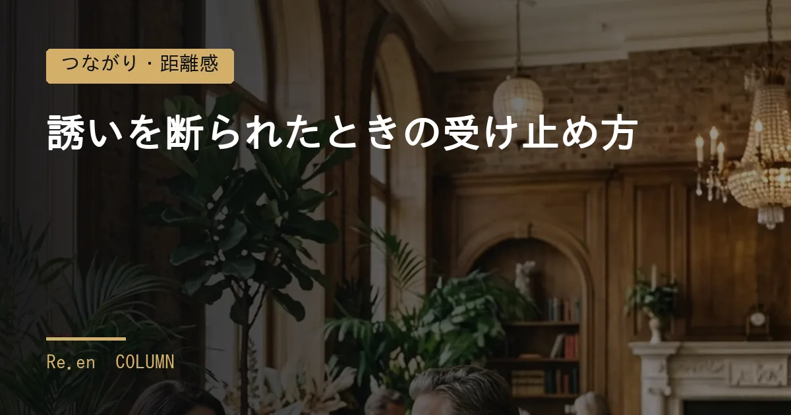
誘いを断られたときの受け止め方｜落ち込まず次につなげる返信例と考え方
友人や知人を誘って断られると、気持ちが沈むものです。断られた理由の受け止め方、そのまま使える返信の例文、次に誘うタイミング、自分を責めないための考え方を具体的に解説します。
記事を読む
仕事の疲れを家に持ち込まない｜帰宅前の気持ち切り替え術5選
仕事の緊張や疲れを引きずったまま帰宅してしまう人へ。帰り道の過ごし方、玄関前の3呼吸、家族への最初の一言の例文、帰宅後の休み方まで、今日から使える切り替え方を解説します。
記事を読む
モヤモヤを書いて整理する方法｜3分ノートの書き方と続けるコツ
頭の中のモヤモヤは、紙に書き出すと整理しやすくなります。3分で終わる5ステップ、何も書けない日の書き出し例、書くとつらくなったときの対処、続けるコツまで具体例つきで解説します。
記事を読む
初対面の緊張をやわらげる準備｜会う前日から当日までの心がまえと安全対策
初めて会う人の前で緊張する人へ。前日までの準備、当日の過ごし方、話題の用意、うまく話せなくても大丈夫な考え方に加え、初対面で守りたい安全対策も紹介します。公式の情報をもとに、具体的な手順と例文を紹介します。
記事を読む
遅刻やキャンセルを気まずくしない伝え方｜約束の変更マナーと文例
約束に遅れる、予定を変更したいときの連絡マナーを解説。連絡のタイミング、お詫びの順番、代案の出し方、そのまま使える文例と、繰り返してしまうときの見直し方を紹介。公式の情報をもとに、具体的な手順と例文を紹介します。
記事を読む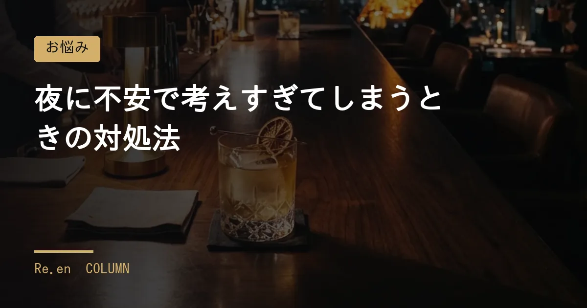
夜に不安で考えすぎてしまうときの対処法｜気持ちを整理する5つの習慣
夜になると不安が大きくなり眠れない人へ。書き出しで頭の中を整理する方法、考える時間を区切るコツ、体を整える習慣、相談の目安を紹介。つらさが続くときは医師へ。公式の情報をもとに、具体的な手順と例文を紹介します。
記事を読む
感情的になった会話を落ち着かせる方法｜その場でできる5つの工夫と言い換え
大切な人との会話で感情的になり、言いすぎて後悔する人へ。体のサイン、深呼吸、間をとる言葉の例文、あとで振り返る方法まで、その場でできる工夫を具体的に紹介します。公式の情報をもとに、具体的な手順と例文を紹介します。
記事を読む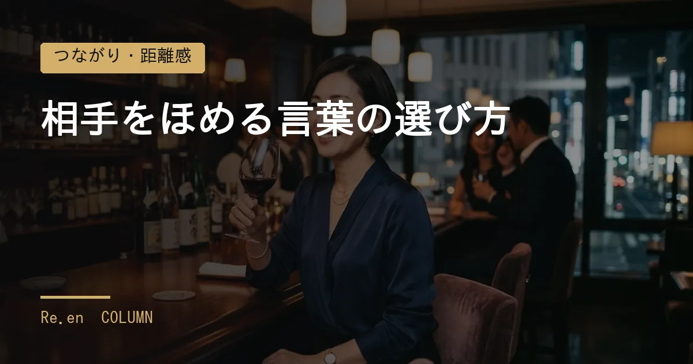
相手をほめる言葉の選び方｜押しつけにならない5つのコツと例文
ほめ言葉がお世辞に聞こえる、プレッシャーになる悩みへ。事実＋感想で伝えるコツ、外見や私生活に触れる際の注意、場面別の例文、ほめられたときの返し方を紹介。公式の情報をもとに、具体的な手順と例文を紹介します。
記事を読む
オンラインコミュニティで安心して話すマナー｜言葉づかいと個人情報の守り方
顔が見えないオンラインの交流で、気持ちよく話すための5つのマナー。言葉づかい、返信のペース、個人情報の守り方、困ったときの相談先（警察・188）まで解説します。公式の情報をもとに、具体的な手順と例文を紹介します。
記事を読む
誘いを上手に断る方法｜気まずくならない伝え方と、そのまま使える文例
誘いを断りたいけれど関係が悪くなりそうで不安な人へ。断る前の整理、感謝と代案の添え方、場面別の文例、断りにくい相手への対処まで具体的に解説します。公式の情報をもとに、具体的な手順と例文を紹介します。
記事を読む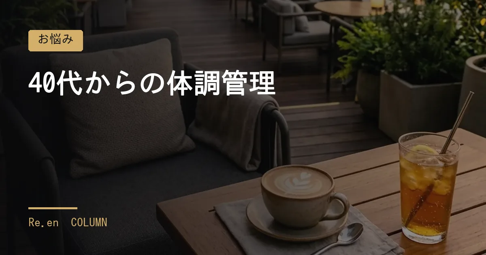
40代からの体調管理｜疲れやすさに向き合う、無理なく続くセルフケア5つ
40代で疲れが取れにくいと感じる人へ。睡眠・食事・運動・気持ちの整え方・記録と相談まで、1つから始められるセルフケアを具体的に紹介。つらさが続くときは医師へ。公式の情報をもとに、具体的な手順と例文を紹介します。
記事を読む
季節のあいさつで気持ちを伝える｜負担にならない一言メッセージと例文集
新年・暑中・年末など、季節のあいさつを負担なく送るコツを解説。基本の3要素、送る時期、そのまま使える例文、送りすぎを避ける目安まで紹介します。公式の情報をもとに、具体的な手順と例文を紹介します。
記事を読む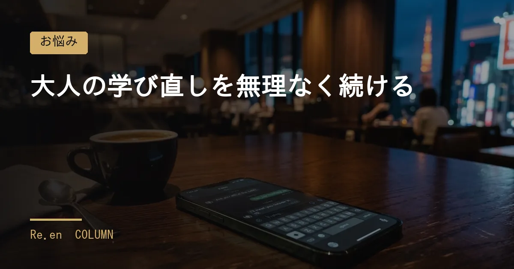
大人の学び直しを無理なく続ける｜テーマの選び方と時間・費用の工夫
30〜50代の学び直しを、テーマ選び、学び方の比較、時間と費用の工夫、学びを日常に活かす方法まで具体的に解説。資格に頼らず、楽しみながら続けるコツを紹介します。公式の情報をもとに、具体的な手順と例文を紹介します。
記事を読む
お金の価値観の違いを話し合う｜気まずくならない切り出し方と進め方
お金の使い方が合わないときの切り出し方を、そのまま使える例文つきで解説。責めずに伝える順番、数字と優先順位の整理、譲れる点・譲れない点の決め方まで紹介します。公式の情報をもとに、具体的な手順と例文を紹介します。
記事を読む
新しいことに挑戦する勇気の出し方｜40代から小さく試す5つの方法
「今さら遅い」「失敗が怖い」で動けない40代へ。不安の正体、期間と費用を区切って試す方法、失敗の捉え直し、周囲への伝え方を具体例つきで解説します。公式の情報をもとに、具体的な手順と例文を紹介します。
記事を読む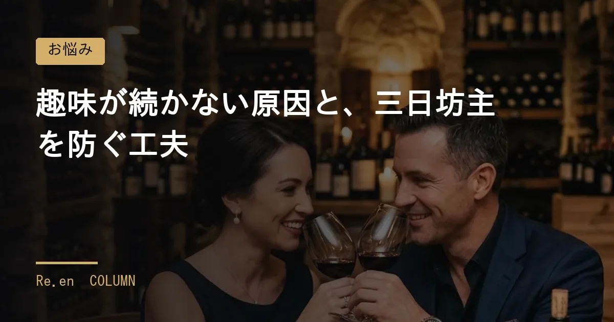
趣味が続かない原因と、三日坊主を防ぐ工夫｜40代からの無理のない始め方
趣味が続かないのは意志の弱さではなく設計の問題。原因の見分け方、5分から始める手順、記録と見直しの基準、中断しても戻れる考え方を例文つきで解説します。公式の情報をもとに、具体的な手順と例文を紹介します。
記事を読む
人間関係の整理の仕方｜疲れる付き合いを見直す5つのステップ
会ったあとにどっと疲れる関係を、無理なく見直す5つのステップを解説。疲れる関係のサイン、気持ちの整理、距離の調整、断り方の文例、罪悪感との向き合い方をまとめました。
記事を読む
仕事・家庭・自分の時間のバランスの取り方｜心に余裕をつくる5つのコツ
仕事と家庭に追われて自分の時間が取れない人へ。やることの書き出し、優先順位のつけ方、頼る・手放す工夫、短い自分時間のつくり方、罪悪感との向き合い方をまとめました。
記事を読む
気持ちを分かってもらえないときの伝え方｜誤解を減らす5つの話し方
何度言っても気持ちが伝わらないもどかしさを減らす話し方を解説。伝える時間の選び方、結論からの話し方、「私は」の使い方、具体的な頼み方、伝わらないときの考え方をまとめました。
記事を読む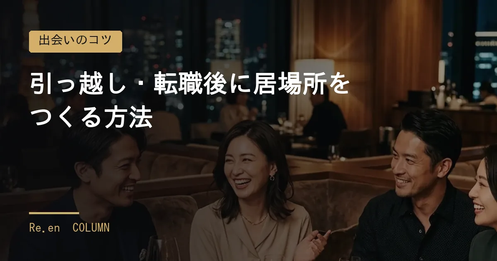
引っ越し・転職後に居場所をつくる方法｜孤独をやわらげる5つのステップ
転居や転職で知り合いがいなくて心細い方へ。通える場所を決める、顔なじみを増やす、地域や趣味の場に参加する、オンラインの安全な使い方など、無理なく居場所をつくる方法を解説します。
記事を読む
SNSを見て落ち込むときの付き合い方｜見すぎない・比べない5つのルール
SNSを見て疲れたり、他人と比べて落ち込んだりする人へ。見る時間と通知のルール、比べてしまう気持ちの扱い方、発信の注意点、休み方を、そのまま使える手順で解説します。
記事を読む年上・年下の人と気持ちよく話す方法｜世代をこえる会話の5つのポイント
年上・年下の相手と話すときの5つのポイントを解説。敬意の示し方、先入観の手放し方、話題の選び方、聞く姿勢、アドバイスのタイミングを、そのまま使える言い回しとともに紹介します。
記事を読む
住所・勤務先を聞かれたときの断り方｜角が立たない文例と対処法
住所・勤務先・家族構成など個人情報を聞かれて困ったときの断り方を文例つきで解説。やわらかいかわし方、しつこい相手への対応、やり取りの記録と相談先をまとめました。
記事を読む
初対面で自分のことをどこまで話す？ちょうどよい自己開示の目安
初めて会う相手との会話で、自分の話をどこまでするか迷う方へ。話す深さの段階、話してよい話題と避ける話題、質問の返し方、安全面の線引きを、例文つきで解説します。
記事を読む
睡眠不足でイライラが続くときの対処法｜忙しい人の夜の5つの習慣
睡眠不足でイライラや落ち込みが続く人向けに、夜の過ごし方を見直す5つの習慣を解説。寝る前のスマホ、入浴、書き出し、部屋づくり、続けるコツと相談の目安をまとめました。
記事を読む
価値観が違う人との話し合い方｜相手を否定せず伝える5つのコツ
友人やパートナーと価値観が合わないときの話し合い方を解説。聞き方、事実と気持ちの分け方、「私は」の伝え方、落としどころの探し方、距離を置く判断基準を例文つきでまとめました。
記事を読む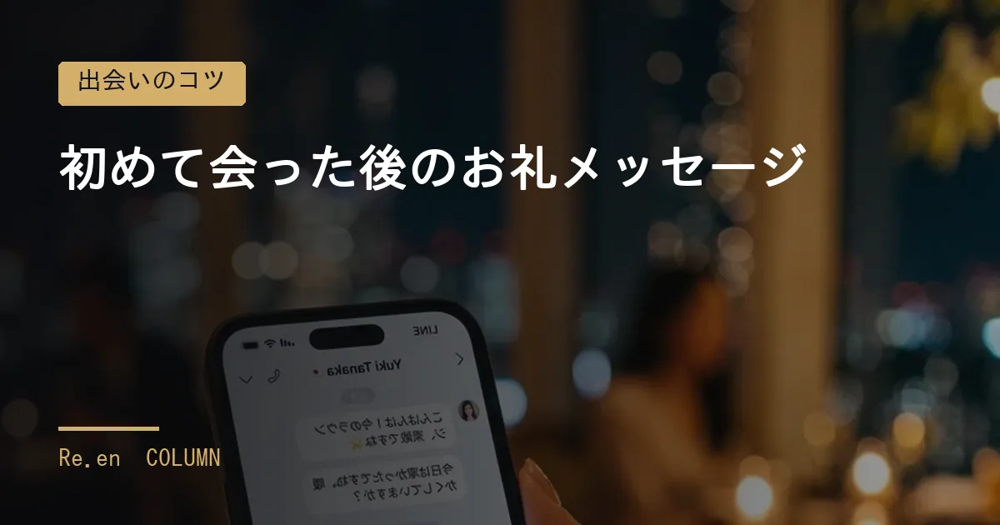
初めて会った後のお礼メッセージ｜好印象を残す例文と送るタイミング
初めて会った相手へのお礼メッセージの書き方を解説。送る時間帯、入れたい3つの要素、場面別の例文、送りすぎの目安、返事がないときの考え方までをまとめました。
記事を読む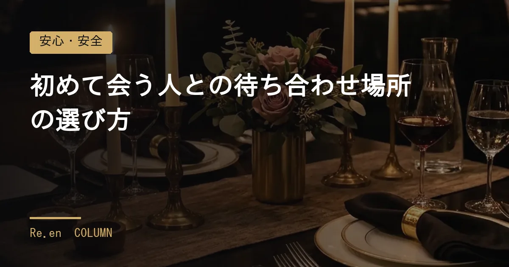
初めて会う人との待ち合わせ場所の選び方｜安心できるお店・時間帯・席
友人や初めて会う相手と安心して話せる場所の選び方を解説。お店の4つの条件、昼と夜の違い、席の選び方、会計と帰り道の注意、断る言い方まで具体例つきでまとめました。
記事を読む
コミュニティサービスと疲れずに付き合う方法｜利用時間・通知・距離感
コミュニティサービスを無理なく続けるコツを解説。一日の利用時間と通知の決め方、返信が遅いときの考え方、疲れたときの休み方、やめたくなったときの判断基準をまとめました。
記事を読む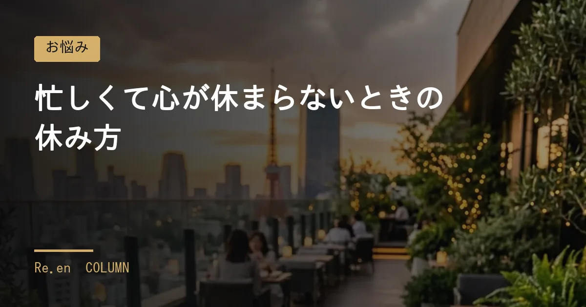
忙しくて心が休まらないときの休み方｜5分からできるストレスケア
仕事や家事で心が休まらない方へ。疲れのサインの見分け方、5分でできる呼吸と書き出し、夜の整え方、つらさが続くときの相談の目安を、そのまま使える手順でまとめました。
記事を読む
悩みを聞いてもらうコツ：相談相手の選び方と、重くならない話し方
悩みを一人で抱えて重くなる前に。相談相手の選び方、聞いてもらいやすい話し方の例文、聞き役を疲れさせない配慮、専門窓口に頼るタイミングまで、具体的に紹介します。
記事を読む
SNS・アプリのプライバシー設定の見直し方：自分の個人情報を守る5つの習慣
SNSやコミュニティサービスで個人情報が広がるのを防ぐ、5つの習慣を紹介。公開範囲、本名と写真の扱い、位置情報、パスワード管理、定期点検の手順を具体的に解説します。
記事を読む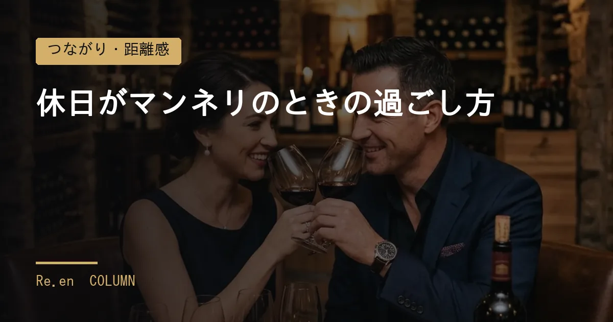
休日がマンネリのときの過ごし方：既婚者が気分転換できる5つのアイデア
平日は仕事と家事、休日は用事と睡眠で終わる。そんな毎日に変化をつける、近場で短時間でできる3つと、人とのつながりを増やす2つのアイデアを、家族との両立のコツと一緒に紹介します。
記事を読む
ほどよい連絡頻度の目安：相手の負担にならないやり取りのコツ
連絡が多すぎると負担に、少なすぎると関係が薄れます。既婚者同士のほどよい連絡頻度の目安、時期別の考え方、連絡ルールの決め方、負担を感じたときの伝え方を例文つきで解説します。
記事を読む
会う前のビデオ通話・電話で相手を確かめる方法：見ておきたい5つのポイント
メッセージだけでは分からない相手の雰囲気を、会う前の短い通話で確認する方法。通話前の設定、確認する5つのポイント、断り方、詐欺を疑うサインまで具体的に解説します。
記事を読む
プロフィール文の書き方：好印象を与える自己紹介と例文5パターン
プロフィール文は相手が最初に読むあなたの顔です。書く順番、文字数の目安、30〜50代既婚者向けの例文5パターン、避けたい表現と個人情報の守り方を具体的に紹介します。
記事を読む
既婚者の趣味友だちの作り方：共通の話題で気軽につながる5つのステップ
仕事と家庭中心の毎日で、趣味を語れる相手が欲しい既婚者へ。趣味を見つける、探す、声をかける、会話を広げる、距離感を保つ5つのステップを、例文と注意点つきで紹介します。
記事を読む
「ありがとう」の伝え方：感謝と思いやりで関係を深める大人のコミュニケーション
感謝は伝え方で届き方が変わります。「ありがとう」を相手に届く形にする3つのコツ、場面別の例文、パートナーや友人への伝え方、やりがちなNG表現を具体的に解説します。
記事を読む
フィッシング詐欺・偽サイトからアカウントを守る：メールとリンクの見分け方
「アカウントが停止されました」などの偽メールに慌てないために。偽サイトの見分け方、リンクを押す前の確認手順、日頃の守り方、被害に遭ったかもしれないときの対処と相談先を解説します。
記事を読む
自己肯定感を高める7つの習慣：40代・50代が心に余裕を取り戻す方法
周りと比べて足りない気がする、自分の価値を見失いがち。そんな40代・50代に向け、毎日できる7つの習慣と、自分を責めすぎない考え方、声かけの言い換えを例文つきで紹介します。
記事を読む
既婚男性の孤独：仕事と家庭の板挟みで心が疲れたときの整え方
仕事では責任、家庭では頼られる役割。話せる場所がなく孤独を感じる既婚男性へ。心の疲れのサイン、今日からできる整え方、安心できる相談先の選び方を具体的に解説します。
記事を読む
50代既婚者の友人づくり：子育て後・定年前に新しい居場所を見つける方法
子どもの独立後、家族以外に気軽に話せる相手がいないと感じる50代へ。友人が減る理由、出会える場所の選び方、続けるコツ、家庭との両立の考え方を具体例つきで解説します。
記事を読む
合わない相手への上手なお断り：角を立てずに距離を置く文例集
やり取りを終えたいときの伝え方を、状況別の文例つきで解説。断るタイミング、返信を放置しない理由、しつこい相手への対応、ブロックや通報の判断基準まで具体的に紹介します。
記事を読む
聞き上手になる会話術：相手が話したくなる質問と相づちの例文集
会話が続かない悩みは、話す量ではなく「聞き方」で変わります。相手が話したくなる質問の作り方、相づちの例文、沈黙への向き合い方、メッセージでの聞く姿勢を具体的に紹介します。
記事を読む
既婚者との連絡でやりがちなNGメッセージ10選｜好印象に変える言い換え例
返信の催促、重い愛情表現、家庭への不満、個人情報の質問など、やりがちなNGメッセージ10選と、好印象に変わる言い換え例、返信しやすい3文メッセージの作り方を解説します。
記事を読む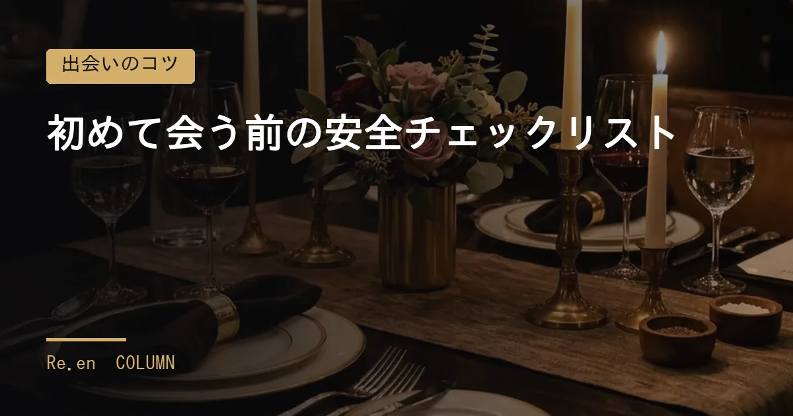
初めて会う前の安全チェックリスト｜場所・時間・事前連絡の決め方
初めて会う前に確認したいこと、待ち合わせ場所と時間の選び方、当日の振る舞い、違和感を覚えたときの断り方の例文、会った後の対応まで、安全を守る手順を順に解説します。
記事を読む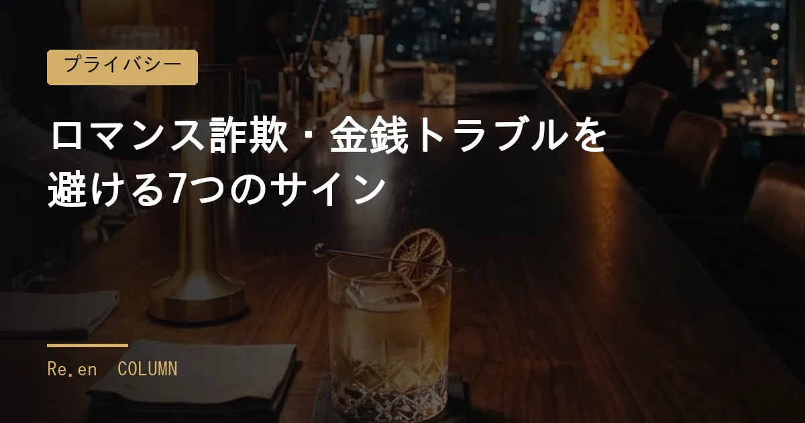
ロマンス詐欺・金銭トラブルを避ける7つのサイン｜お金の話が出たときの対処法
ロマンス詐欺の典型的な流れ、見分ける7つのサイン、お金の話が出たときの断り方の例文、被害に遭ったときの相談先（警察・消費生活センター188）を具体的に解説します。
記事を読む
完全審査制とは？既婚者向けサービスで本人確認が欠かせない3つの理由
完全審査制とは、利用前に本人確認や認証を行う仕組み。既婚者向けサービスで欠かせない3つの理由、書類提出の不安への考え方、審査があっても自分でできる安全対策を解説します。
記事を読む
Re.en（リエン）とは？既婚者向け完全審査制コミュニティの特徴と事前登録
Re.en（リエン）は既婚者向けの完全審査制コミュニティ。2026年冬リリース予定。本人確認と既婚の認証、ニックネーム・写真のぼかしなどの機能、事前登録の流れ、向いている人を解説します。
記事を読む
ドタキャンや連絡の途絶を防ぐ：会う前の意向確認と連絡の取り方
ドタキャンを防ぐ鍵は、約束の前に「確認・調整・退路」を整えること。事前確認の例文、当日の連絡ルール、キャンセルされたときの受け止め方を具体的にまとめます。
記事を読む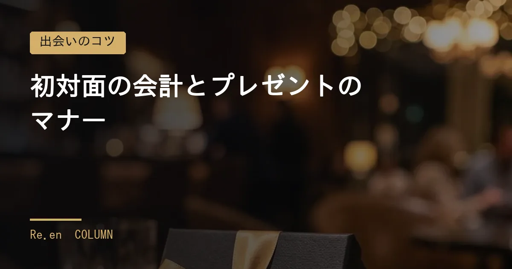
初対面の会計とプレゼントのマナー：奢る・割り勘の判断と、お金を求められたときの注意
初対面の会計は、気持ちよく払える範囲で「今日は私が」と一言添えるのが基本。割り勘との使い分け、高価な贈り物を避ける理由、金銭を求められたときの危険信号と相談先を解説します。
記事を読む
嫉妬や依存を感じたときの対処法：心のつながりと依存の境界線を見極める
嫉妬や依存を感じたら、まず「気持ちを否定せず、行動を一歩遅らせる」こと。依存の見分け方、今日からできる気持ちの整え方、距離の取り直し方と相談先を例文つきで解説します。
記事を読む
既婚女性に好まれる男性の振る舞いとは？信頼される大人の紳士的マナー
既婚女性に信頼される男性に共通するのは、聞く姿勢・約束を守る誠実さ・踏み込みすぎない節度。メッセージ、初対面、会計、別れ際まで、具体的な言い方とNG行動をまとめます。
記事を読む
既婚者向けアプリを家庭と両立して使う方法：無理のない利用ペースと時間帯
家庭と両立するコツは「使う時間を先に決め、通知を整え、1日15分程度から始める」こと。時間帯の目安、通知とロックの設定、のめり込みを防ぐルールを具体例つきで解説します。
記事を読む
既婚者同士の付き合いが長続きする距離感とは？互いを尊重する目安と言い方
長続きする距離感の答えは「家庭を最優先に、頻度・深さ・時間を控えめに保つこと」。連絡や会う頻度の目安、踏み込まない話題、距離が近づきすぎたときの伝え方を例文つきで解説します。
記事を読む
洗練された大人の女性の印象を作る習慣｜会話・身だしなみ・距離感の整え方
洗練された大人の女性という印象は、特別な美しさではなく、会話・身だしなみ・距離感の習慣で作られます。初対面で好印象を与える具体的な方法とNG行動を解説します。
記事を読む
既婚女性の日常の孤独感｜自分の時間と居場所を取り戻す5つの習慣
家事・育児・仕事に追われ、気づけば自分の時間がない既婚女性へ。孤独感が生まれる背景、続けやすい5つの小さな習慣、家庭の外に居場所をつくる方法をやさしく解説します。
記事を読む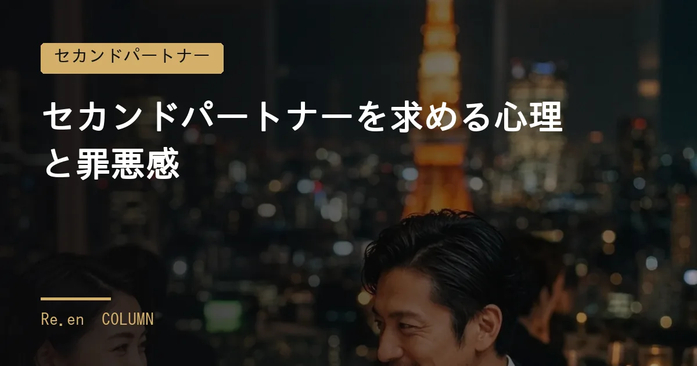
セカンドパートナーを求める心理と罪悪感｜自分の気持ちを整理する考え方
セカンドパートナーを求める気持ちの背景と、感じやすい罪悪感との向き合い方を整理。家庭を最優先にしたまま、自分の本音を確かめる方法と距離感の目安を解説します。
記事を読む
既婚者同士のお茶デートの誘い方｜初回に好印象を与える日程・場所・例文
既婚者同士の初回はお茶デートが向いています。誘うタイミング、日程の提案の仕方、断られたときの返し方まで、そのまま使える例文つきで解説します。
記事を読む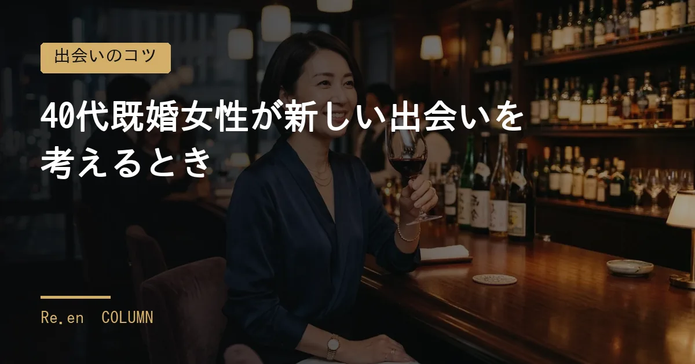
40代既婚女性が新しい出会いを考えるとき｜気持ちの整理と安全な始め方
40代の既婚女性が、新しい出会いを考えるようになる背景と心境の変化を整理。家庭を大切にしたまま、気持ちを確かめる方法と、安全に始めるための準備を解説します。
記事を読む
決済・明細・通知の設定を見直す｜自分の支払い情報と利用履歴を守る方法
アプリの決済方法、カード明細、通知の設定を見直し、自分の支払い情報と利用履歴を適切に管理する方法を解説。不審な請求や偽サイトへの備え、相談先もまとめました。
記事を読む
既婚者同士の連絡頻度と返信タイミング｜負担にならない目安と例文
既婚者同士のメッセージは、頻度と返信の早さの目安をあらかじめ共有するのがコツです。時間帯、返信が遅れたときの例文、既読の気にしすぎ対策まで具体的に解説します。
記事を読む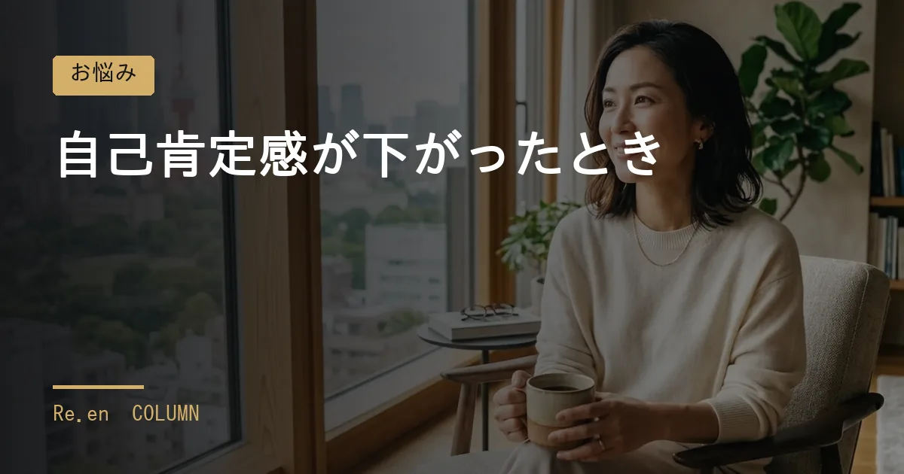
自己肯定感が下がったとき｜異性として認められたい気持ちとの向き合い方
家庭で「親」「妻・夫」としてばかり見られ、自己肯定感が下がったと感じる人へ。異性として認められたい気持ちの正体と、家庭を大切にしたまま自分を取り戻す具体策を解説します。
記事を読む
初対面・初デートの店選び｜既婚者同士が落ち着いて話せる場所と席の選び方
既婚者同士の初対面で失敗しない店と席の選び方を解説。静かなカフェやラウンジの条件、昼と夜の違い、席の選び方、安全面の注意点まで具体的にまとめました。
記事を読む
共働き夫婦のすれ違いと疲れ｜家庭を守りながら家庭外の相談先を持つ方法
共働き夫婦のすれ違いで疲れたとき、まず夫婦で整えたいことと、家庭外に相談先を持つ際の距離感を解説。家庭を最優先にしながら、心に余白をつくる具体策をまとめました。
記事を読む
既婚者同士が会うときのマナー｜家庭を第一に、互いを尊重する大人の作法
既婚者同士が会うときのマナーを、事前の約束・当日の振る舞い・お会計・断り方まで具体例つきで解説。家庭を最優先にし、相手の立場も尊重する大人の作法をまとめました。
記事を読む
既婚者マッチングで個人情報とアカウントを守る方法。設計の仕組みと自分でできる対策
個人情報の保護は、サービス側の設計と利用者自身の対策の両方で成り立ちます。ニックネームや写真のぼかし等の仕組みと、パスワード・やり取り・詐欺対策の実践項目を整理します。
記事を読む
セカンドパートナーと長く続けるための3つのルール。最初に決めたい約束の作り方
長続きの鍵は、家庭優先、連絡と会う頻度の約束、お金と個人情報の線引きの3つです。最初に確認したい約束の作り方、話し方の例文、守れなくなったときの対処を解説します。
記事を読む
「このままでいいのか」と感じる30代・40代へ。中年期の揺らぎの乗り越え方
仕事も家庭も安定しているのに、むなしさや焦りを感じる。いわゆる中年期の揺らぎの背景と、心を整える具体的な手順、大きな決断を急がない考え方、相談先を解説します。設定の手順も紹介します。
記事を読む
仮面夫婦のストレスと限界。子どものために続ける日々の心の整え方
仮面夫婦のつらさは、感情を抑え続けることから生まれます。ストレスのサイン、日常で心を整える方法、限界を感じたときの考え方と相談先を、具体的な手順で説明します。設定の手順も紹介します。
記事を読む
プラトニックな関係とは。精神的なつながりを大切にするセカンドパートナーのルール
プラトニックな関係は、体の関係を前提とせず、会話や共感を支えにするつながりです。価値と限界、守りたいルール、感情が深まりすぎたときの考え方を、家庭を第一に解説します。
記事を読む
既婚者マッチングのプロフィール写真の選び方。撮り方・加工と個人情報の出し方
プロフィール写真は、印象と安全の両方を考えて選びます。撮り方や加工の範囲、背景や位置情報の注意、写真のぼかしの活用、載せてよい個人情報の目安をまとめて解説します。
記事を読む
既婚者のカフェデート。静かで落ち着いて話せるカフェの選び方と安全の心得
初めて会う場所は、明るい時間帯の公共の場が基本です。静かで話しやすいカフェを選ぶ条件、席の取り方、会計や帰り方のマナー、安全面の注意をチェックリストで紹介します。
記事を読む
ブラウザのシークレットモードと履歴の基本。共有パソコンで個人情報を守る方法
シークレットモードは履歴を端末に残さない機能で、通信を匿名にするものではありません。仕組みの限界、共有パソコンでのログアウトや履歴の消し方、安全な使い方を解説します。
記事を読む
既婚者同士の最初のメッセージ。好印象の書き方と返信が続く例文集
最初のメッセージは短く、相手のプロフィールに触れ、答えやすい質問を1つ添えるのが基本です。そのまま使える例文、避けたい書き方、返信が来ないときの考え方を紹介します。
記事を読む
既婚者マッチングの二要素認証とパスコード設定。アカウントを守る基本と手順
二要素認証は、パスワードに加えてもう1つの確認を求める守り方です。仕組み、選び方、スマホの画面ロックやパスコードの決め方、紛失時の備えを手順で解説します。設定の手順も紹介します。
記事を読む
夫の言動にイライラしたときの対処法｜夫婦関係を保つ「心の境界線」の引き方
夫へのイライラは、境界線の引き方で和らぎます。感情が高ぶったときの対処、伝え方の例文、自分の時間と空間の守り方を、そのまま使える言い回しつきで解説します。
記事を読む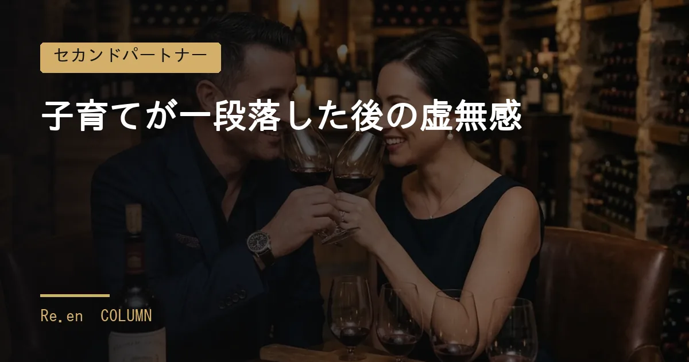
子育てが一段落した後の虚無感｜空の巣症候群と呼ばれる気持ちの整え方と新しい居場所
子どもが巣立った後の寂しさは、多くの親が経験します。空の巣症候群と呼ばれる状態の捉え方、夫婦関係の見直し、趣味や人間関係の広げ方を、女性の気持ちに寄り添って解説します。
記事を読む家事と育児に追われる主婦が「自分の時間」を取り戻す方法｜1日30分のつくり方
自分の時間は、1日30分から取り戻せます。家事の手放し方、家族への頼み方、すきま時間の使い方、罪悪感との付き合い方を、主婦の気持ちに寄り添って具体的に解説します。
記事を読む
夫に愛されていないと感じる寂しさ｜心が満たされないときの考え方と自分を支える習慣
愛情表現が減ると、寂しさや虚しさが強まります。その気持ちの整理の仕方、夫に伝える言葉、自分で心を満たす習慣、相談先を、女性の気持ちに寄り添って丁寧に解説します。
記事を読む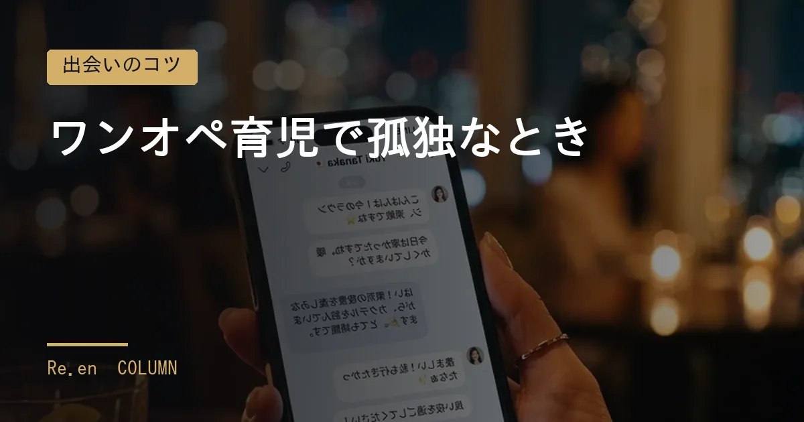
ワンオペ育児で孤独なとき｜家庭の外に「大人として話せる居場所」をつくる方法
ワンオペ育児の孤独は、頼れる先を小さく増やすことで軽くなります。自治体の支援、気軽な交流の場、オンラインの居場所の選び方と、安全面の注意を具体的に解説します。
記事を読む
夫から女性として見られないつらさ｜セックスレスの寂しさとの向き合い方と話し合いのコツ
夫に触れられない寂しさは、自分の価値の問題ではありません。つらさの受け止め方、夫に気持ちを伝える言い方、第三者に相談する目安、気持ちの整え方を、女性の立場に寄り添って整理します。
記事を読む夫へのイライラと体調不良が続くとき｜「夫源病」と言われる状態の整理とセルフケア
夫への強いストレスで不調を感じるとき、まず睡眠・食事・距離の取り方を整えましょう。夫源病という呼び名の意味、セルフケアの手順、受診を考える目安を解説します。診断ではありません。
記事を読む
マッチしないときの見直しポイント｜写真・プロフィール・最初のメッセージの直し方
マッチしない原因は、写真の印象、プロフィールの具体性、最初のメッセージの3つに分けて見直せます。個人情報を守りながら好印象を与える直し方を、例文つきで解説します。
記事を読む
既婚者同士の関係を円満に終わらせる方法｜別れ話の切り出し方と引き際のマナー
関係を終えると決めたら、感情が高ぶる前に伝え、連絡を断つ範囲をはっきりさせるのが基本です。別れ話の言い回し、やってはいけない行動、終えた後の気持ちの整え方を解説します。
記事を読む
平日の昼に会う既婚者のマナーと場所選び｜ランチで失敗しない時間帯と店の選び方
平日の昼に会うなら、11時半〜13時台・60〜90分・個室ではなく人目のある静かな店が基本です。時間帯の考え方、店選び、当日のマナー、安全面の注意を具体例つきで整理します。
記事を読む
既婚者同士の2回目のデートの誘い方。自然に距離を縮める会話とプランの選び方
初回の後、2回目に誘うタイミングと例文、断られにくいプランの選び方、避けたい行動を解説。既婚者同士ならではの配慮と、安全面の注意点もまとめます。
記事を読む
スマホの通知・履歴・位置情報の設定。個人情報とアカウントを守る見直しの手順
ロック画面の通知、閲覧履歴、位置情報、アプリの権限など、スマホで見直したい設定を手順で解説。自分の個人情報とアカウントを第三者から守るための基本をまとめます。
記事を読む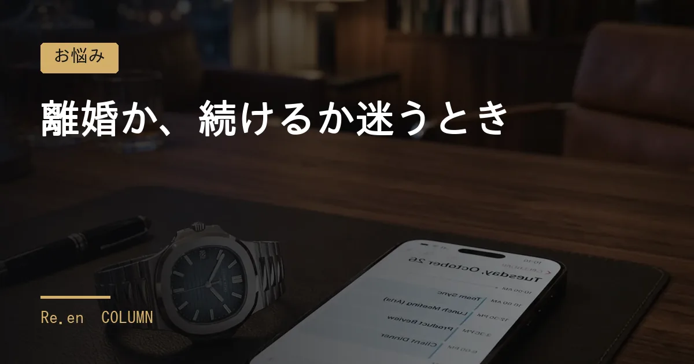
離婚か、続けるか迷うとき。結論を急がず関係を見直す選択肢と整理の手順
離婚か結婚生活の継続か迷う既婚者へ。決断前に整理すること、対話・別居・専門家への相談など離婚以外の選択肢、お金と生活の確認項目を、断定せずに解説します。
記事を読む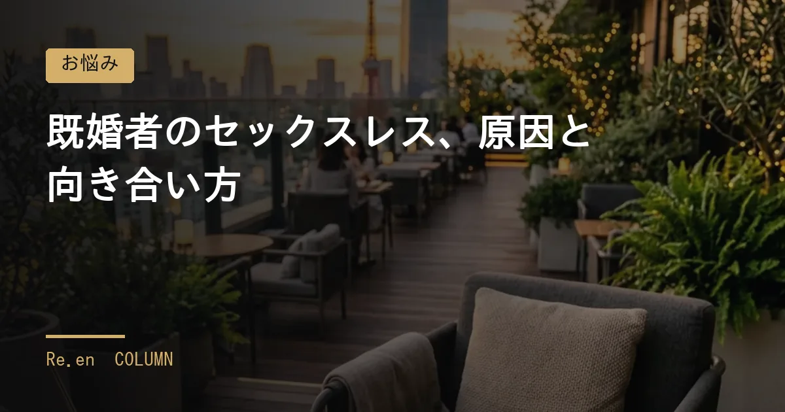
既婚者のセックスレス、原因と向き合い方。心のつながりを取り戻す会話術
セックスレスで悩む既婚者へ。原因の整理、切り出し方の例文、スキンシップの再開、専門家に相談する目安まで、心のつながりを大切にする向き合い方を解説します。
記事を読む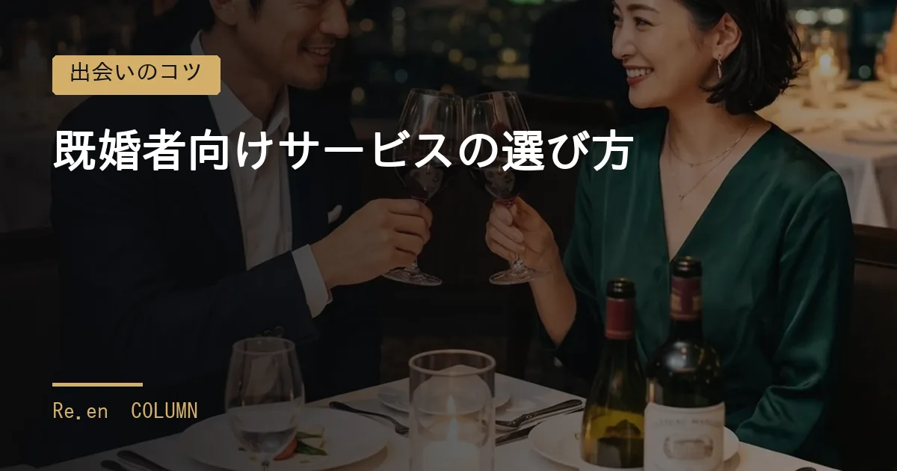
既婚者向けサービスの選び方｜比べるときに見るべき5つのポイント
既婚者向けサービスを比べるときの見方を、審査・本人確認・プライバシー機能・料金の透明性・サポートの5つに整理。公式サイトで確認できる項目と、避けたい兆候を解説します。
記事を読む
既婚者向けサービスのプライバシー設定ガイド｜個人情報とアカウントを守る方法
ニックネーム、写真のぼかし、電話番号ブロック、シークレットモードなどの機能の使いどころと、個人情報を出しすぎない心得、アカウントを守る基本の対策を整理して解説します。
記事を読む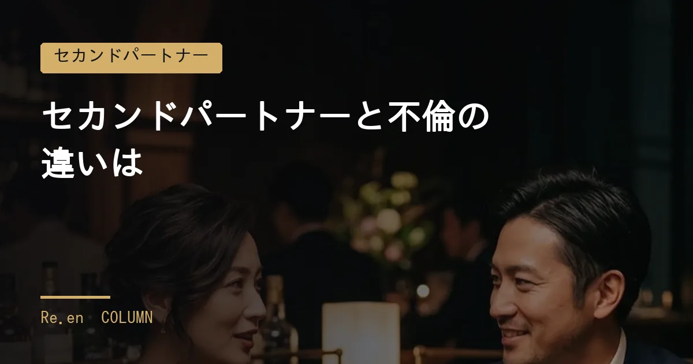
セカンドパートナーと不倫の違いは？法的リスクと守るべき境界線
セカンドパートナーと不倫の違いを、法律上の考え方、配偶者との信頼、依存のリスクから整理。呼び名で責任は変わらないこと、守るべき境界線と相談先を解説します。
記事を読むセカンドパートナーとは？意味・考え方と、向き合う前に知るべき注意点
セカンドパートナーとは何か、言葉の意味や広がる背景、感じ方の違い、家庭との向き合い方を整理。法的な位置づけや依存のリスクなど、知っておきたい注意点も解説します。
記事を読む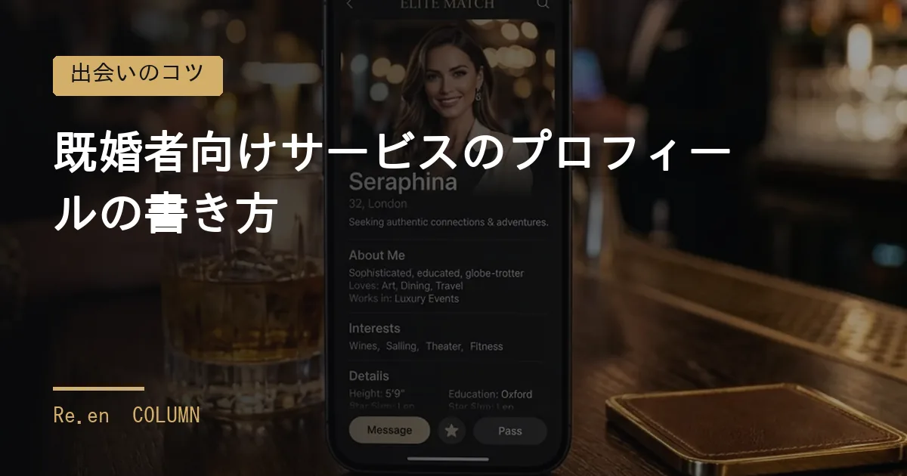
既婚者向けサービスのプロフィールの書き方｜写真選びと自己紹介文の添削例
プロフィール写真の選び方と、自己紹介文の基本の型、添削前後の例文を紹介。個人情報を出しすぎずに誠実さを伝える書き方と、避けたい表現をやさしく、具体的に解説します。
記事を読む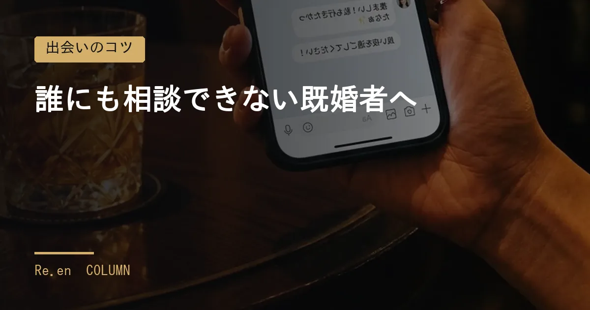
誰にも相談できない既婚者へ。安心して話せる相談相手の見つけ方
家族にも友人にも話せない悩みを抱える既婚者へ。相談先の種類、相手を選ぶ基準、話し方、依存や情報漏れを避ける注意点を、想定ケースを交えて解説します。
記事を読む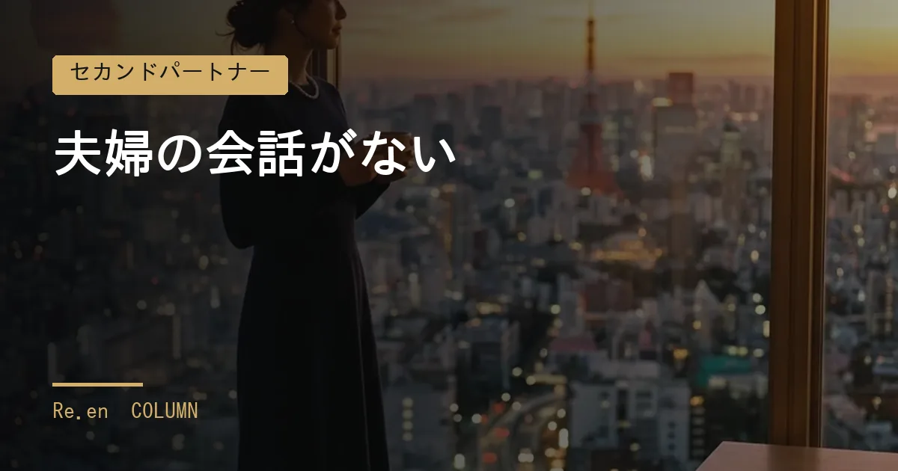
夫婦の会話がない｜会話レスの原因と、関係を見直す判断基準
夫婦の会話がなくなる原因、会話を取り戻す5つのステップ、そのまま使える声かけの例文、修復が難しいと感じたときの整理の仕方と、判断の基準をまとめて解説します。夫婦の悩みの整理にも役立ちます。
記事を読む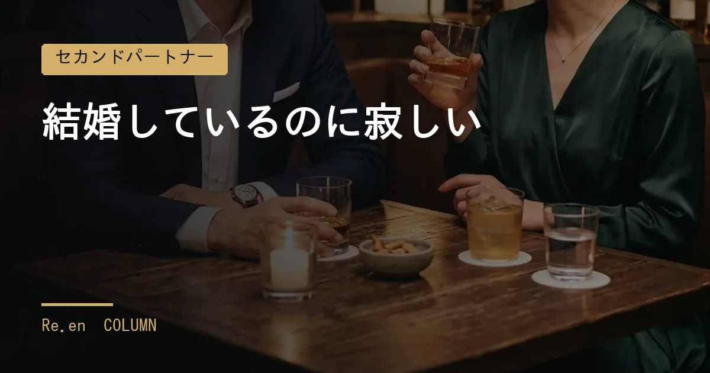
結婚しているのに寂しい｜家庭内孤独の原因と、心を軽くする対処法
家族がいるのに孤独を感じる「家庭内孤独」。夫婦・主婦・主夫それぞれが陥りやすい原因と、今日からできる5つの対処法、相談先、家庭の外に居場所を持つ考え方を解説します。
記事を読む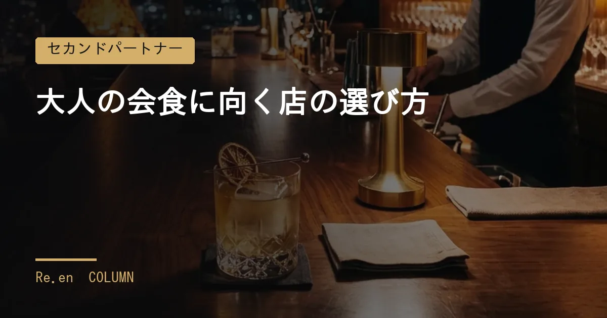
大人の会食に向く店の選び方。静かで落ち着くバーやレストランの基準
大人同士の食事やお酒を楽しむ店の選び方を解説。静けさ、席の配置、予約と時間帯、会計マナーまで、落ち着いて過ごせる基準と避けたい行動をまとめます。
記事を読む40代既婚者の友達の作り方。サークル・習い事・コミュニティの選び方
40代で友達が減ったと感じる既婚者へ。サークル、習い事、地域活動、オンラインの場の特徴と、自分に合う選び方、続けるコツを一般論として整理します。
記事を読む
既婚者同士のメッセージを自然に続ける、最初の挨拶と会う約束のコツ
最初の一通は短く、相手の書いたことに触れ、質問は一つだけ。やり取りが続いたら、日時を絞った短時間の約束へ。例文とNG行動、想定ケース付きで解説します。
記事を読むサードプレイスとは？既婚者が家庭と職場の外に居場所を持つ方法
サードプレイスとは、家庭でも職場でもない第三の居場所のこと。既婚者に必要とされる理由、4つのメリット、見つけ方と選ぶ基準、家庭との両立のコツを具体的に解説します。
記事を読む既婚者向けアプリのサクラ・業者の見分け方｜詐欺を避ける7つのサイン
既婚者向けアプリで気になるサクラや業者。怪しい相手の7つのサイン、サービス選びの確認点、外部アプリに誘われたときの返し方、被害時の相談先を具体例つきで解説します。
記事を読む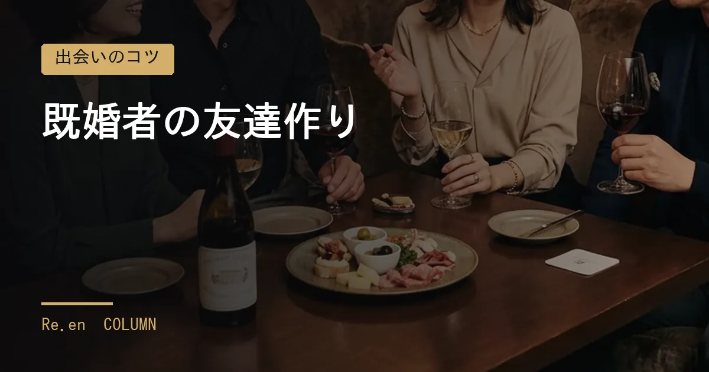
既婚者の友達作り｜30〜50代が家庭の外に友人を持つ方法と続け方
結婚後は友達ができにくいもの。趣味・地域・オンラインなど家庭の外で友人を作る具体的な方法、最初の声かけの例文、距離感のマナー、続けるコツを解説します。続けるための距離感のコツも紹介します。
記事を読むセカンドパートナーとは？意味・既婚者が求める理由・付き合い方の基本
セカンドパートナーとは何か、既婚者が求める理由、「不倫」との違いの考え方、法的なリスク、長続きさせるための心構えを解説。家庭を大切にしながら、心のつながりを持つための基本をまとめます。
記事を読むRe.en (リエン) で、 日常に上質なゆとりを。
2026年冬のリリースに向け、創設メンバーとしての事前登録（ウェイトリスト登録）を受付中です。
女性会員様はずっと無料です。男性会員様は有料ですが、審査に通過された先着1,000名様には、事前登録特典として2ヶ月間の有料サブスクリプション無料提供がございます。
すでに登録がお済みの方はこちら
※先着枠に達し次第、男性会員様向けの事前登録特典（2ヶ月無料）は予告なく終了いたします。本リリース以降の登録は、通常の月額会費が発生します。